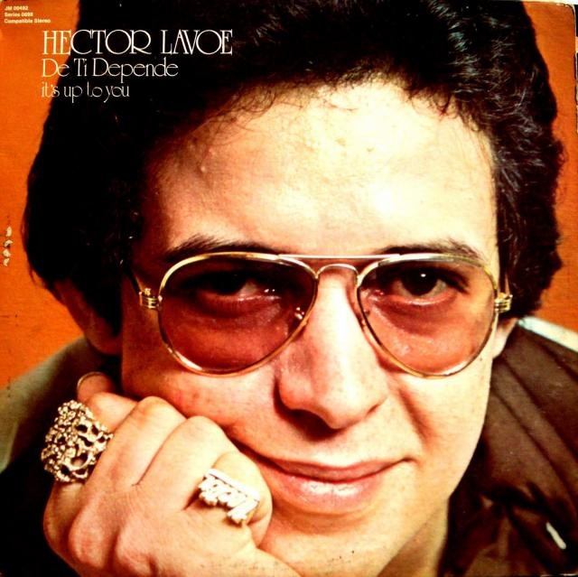
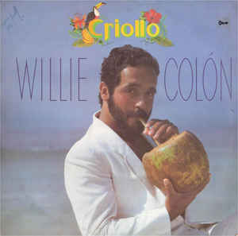

Héctor Juan Pérez Martínez, conocido como Héctor Lavoe (Machuelo Abajo, Ponce, Puerto Rico; 30 de septiembre de 1946 - Queens, Nueva York, 29 de junio de 1993),11 fue un cantante, compositor y productor musical de salsa durante los años 1970 y 1980.
Integró la orquesta de Willie Colón, desde 1967 hasta 1974 en donde logró el reconocimiento con canciones como «Aguanile», «Che Che Colé», «La Murga», «Juana Peña», «Calle Luna, Calle Sol», «Barrunto», «Timbalero», «Abuelita» y más.

Willie Colón

William Anthony Colón Román (El Bronx, Nueva York, 28 de abril de 1950), más conocido como Willie Colón, es un cantante, compositor, músico de salsa y activista político estadounidense. Comenzó su carrera como trombonista, y también canta, escribe, produce y actúa. También está involucrado en la política de Nueva York y la política internacional.